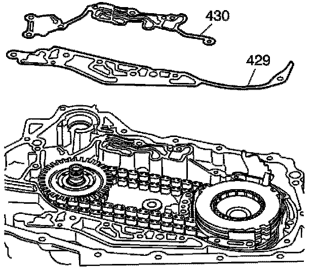
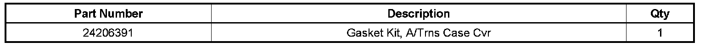
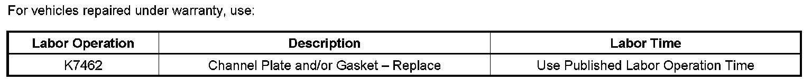

A/T - 4T65E Fluid Leaking From A/T Vent
TECHNICALBulletin No.: 01-07-30-032E
Date: September 29, 2008
Subject:
Transmission Oil Leaking From Transmission Vent (Replace Transmission Case Cover (Channel Plate) Gasket)
Models:
1997-2009 GM Passenger Cars and Light Duty Trucks (including Saturn)
with Hydra-Matic 4T65-E Automatic Transmission (RPOs MN3, MN7, M15, M76)
Supercede:
This bulletin is being revised to add the 2008 and 2009 model years. Please discard Corporate Bulletin Number 01-07-30-032D (Section 07 - Transmission/Transaxle).
Condition
Some customers may comment on a transmission oil leak.
Cause
This condition may be caused by an improperly torqued channel plate gasket.
Correction

To correct this condition, replace the case cover (channel plate) gaskets (429 and 430). Refer to Unit Repair publication in SI of the appropriate vehicle being serviced.
Visual inspection of the upper gasket (1) will reveal damage at the referenced area.

Parts Information
Warranty Information

For vehicles repaired under warranty, use the table.

Disclaimer